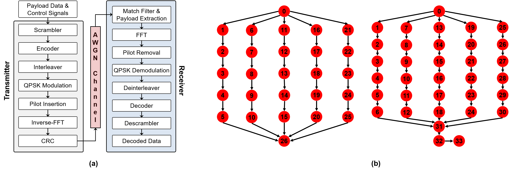

Configuring DS3
DS3 configured via config_file.ini. The file is composed of six sections:
- DEFAULT is the section where all main parameters for a simulation are assigned.
To run a simulation:
- an SoC configuration file,
- an Application configuration file or application configuration files, and
- a scheduler must be defined.
- HEFT SCHEDULER is the section where all HEFT related parameters are assigned.
- IL SCHEDULER is the section where all Imitation Learning based (IL) scheduler parameters are assigned.
- TRACE is the section where all parameters related to tracing are assigned.
- POWER MANAGEMENT is the section where analytical power and temperature model parameters are assigned.
- SIMULATION MODE is the section where simulation mode is defined and related parameters are assigned.
- COMMUNICATION MODE is the section where communication mode is defined and related parameters are assigned.
- DEBUG is the section where various debug messages can be enabled and/or disabled.
- INFO is the section where various information messages can be enabled and/or disabled.
SoC configuration file
DS3 enables instantiating a wide range of SoC configurations with different types of general- and special purpose processing elements (PEs) via an SoC configuration file.
A list of PEs and its characteristics are provided in the file are stored in the resource database
List of PE attributes in resource database
| Attribute | Description |
| Type | Defines type of PE, Example: CPU, accelerator etc. |
| Capacity | Number of simultaneous threads a PE can execute |
| DVFS policy | Policy which controls PE frequency and voltage at runtime |
| Operating performance point | Operating frequencies and corresponding voltages for a PE |
| Execution time profile | Defines the execution time of supported tasks on each PE |
| Power consumption profile | Provides the power consumption profile of each PE |
The configuration file is in a text format and the structure is given below.
To see an example of an SoC configuration file please see one of the SoC.XXX.txt files
Application configuration file
In DS3, applications are modeled as a directed acyclic graph (DAG). In the graph nodes represent a task and edges shows data dependency between the tasks.
For example, the left of the figure below depicts the block diagrams of WiFi transmitter (WiFi-TX) and receiver (WiFi-RX) applications. On the right, however,
the corresponding DAGs for these two applications used in DS3 presented. These reference design of WiFi-TX and WiFi-RX applcaitions contain five parallel
chains of tasks as seen in the figure below.

(a) Block diagrams and (b) DAGs for WiFi-TX and WiFi-RX applications.
The configuration file is in a text format and the structure is given below.
To see an example of an Application configuration file please see one of the job_XXX.txt files
Built-in schedulers
DS3 facilitates plug-and-play simulation of scheduling algorithms; it also incorporates built-in heuristic and table-based schedulers to aid developers and
provide a baseline for users. DS3 also includes power dissipation and thermal models that enable users to design and evaluate new dynamic thermal and power
management (DTPM) policies. The latter, however, will be discussed in another section.
Some of the scheduling algorithms are:
- Minimum Execution Time (MET) scheduler assigns a ready task to a PE that achieves the minimum expected execution time following a FIFO policy (T. D. Braun et al.).
- Earliest Task First (ETF) scheduler utilizes the information about the communication cost between tasks and the current status of all PEs to make a scheduling decision (J. Blythe et al.).
Consider a set of PEs \( P = \{p_0, p_1, ..., p_{q-1}\} \) and a task graph with tasks \(N = \left\{n_0, n_1, ..., n_{k-1}\right\}\). For every task and PE pair, we define the following quantities:
- Estimated Execution Time, EET(n; p), is the total amount of time that the resource p takes to run the task n.
- Estimated Availability Time, EAT(n; p), is defined as the time when the resource p will finish executing all tasks in its queue before the task n.
- Data Availability Time, DAT(n; p), is the earliest time at which all required data becomes available at resource p to perform task n.
- Estimated Completion Time, ECT(n; p), is the completion time of task n executed on resource p. It is given by:
\(ECT(n,p) = EET(n,p)+max[EAT(n,p),DAT(n,p)]\)
The ETF scheduler finds the resource with the minimum ECT value for each available task. Next, the task with the minimum ECT value is determined and it is
scheduled first. This routine is performed until all available tasks are assigned to a PE.
- Constraint Programming scheduler is formulated using IBM ILOG CPLEX Optimization Studio (CPLEX's User Manual) to obtain an optimal schedule whenever the problem
size allows. The simulation framework dynamically calls the CP solver at the injection of each frame (i.e., an instance of an application) to find the schedule as a function
of the current system state. Then, the obtained schedule is stored in a lookup table and tasks are assigned to PEs accordingly as the simulation proceeds. To see implementation
details are in CP_models.py
Users can implement their own scheduling algorithms as a member function in Scheduler class.
Built-in DTPM policies
State-of-the-art SoCs support multiple voltage-frequency domains and DVFS, which enables users to optimize for various power-performance trade-offs. To support this capability,
DS3 allows each PE to have a range of OPPs, configurable in the resource database. The OPPs are voltage-frequency tuples that represent all supported frequencies of a given PE,
which can be exploited by DTPM algorithms to tune the SoC at runtime.
The integrated power and temperature models enable user to implement a wide range of DTPM policies using DS3. To provide a solid baseline to users, DS3 provides built-in
DVFS policies that are commonly used in commercial SoCs. More specifically, users use the input configuration file to set the DTPM policy to ondemand, performance and powersave
governors, or to a custom DTPM governor.
- Ondemand Governor: The ondemand governor controls the OPP of each PE as a function of its utilization. The supported voltage-frequency pairs of a PE are given
by the following set:
\(\mathcal{OPP} = \{(V_1, f_1), (V_2, f_2), \ldots, (V_k,f_k)\}\)
where k is the number of operating points supported by that PE. Suppose that the PE currently operates at \((V2; f2)\). If the utilization of the PE is less than a
user-defined threshold, then the ondemand governor decreases the frequency and voltage such that the new OPP becomes \((V1; f1)\). If the utilization is greater
than another user-defined threshold, the OPP is increased to the maximum frequency. Otherwise, the OPP stays at the current value, i.e., \((V2; f2)\).
- Performance Governor: This policy sets the frequency and voltage of all PEs to their maximum values to minimize execution time.
- Powersave Governor: This policy sets the frequency and voltage of all PEs to their minimum values to minimize power consumption.
- User-Specified Values: This policy enables users to set the OPP (i.e., frequency and voltage) of each PE individually to a constant value within the permitted range.
It enables thorough power-performance exploration by sweeping the OPPs.
Users can also implement their own DTPM algorithms as a member function in DTPM class.


 1.8.18
1.8.18